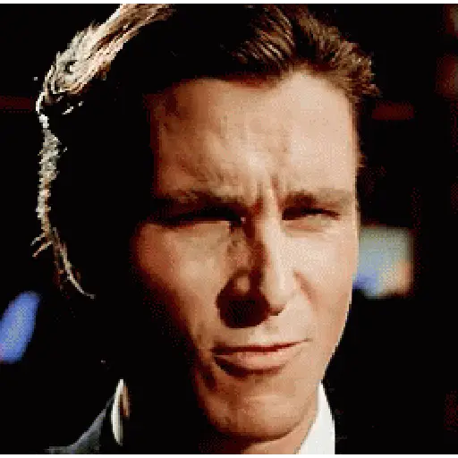
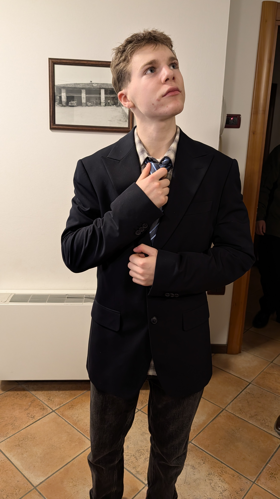
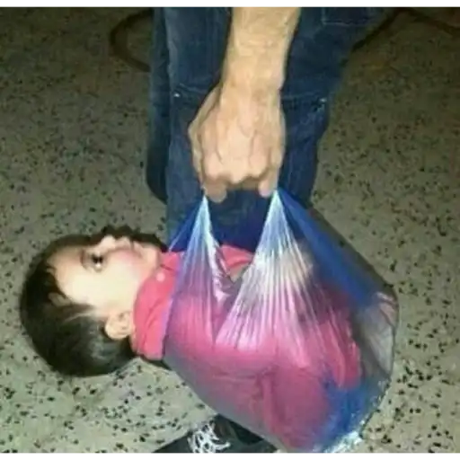
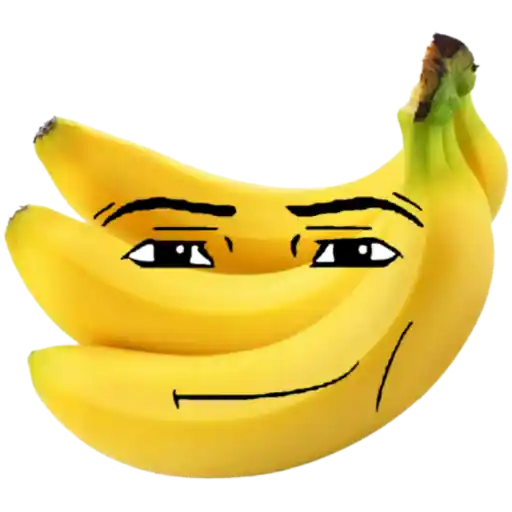
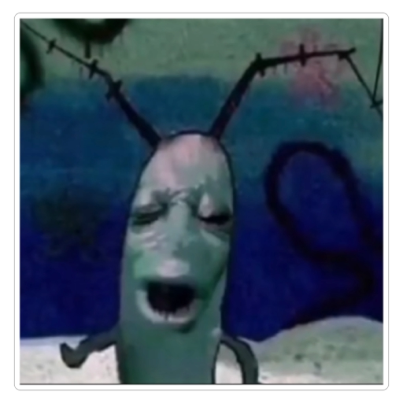
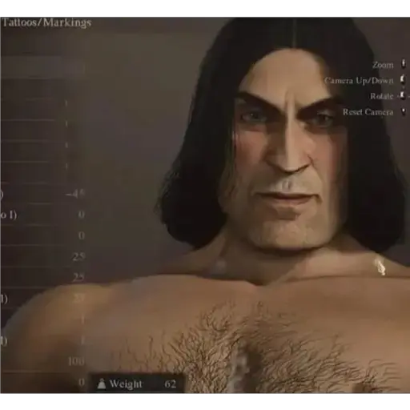

ingrandisci qui!
Benvenuto nella nuova storia illustrata che avrà come protagonista Erik (e fortemente consigliato tenere la schermata zoomata per non spoilerare i passaggi che avra la storia quindi per favore leggi una parte alla volta, grazie!
C'era una volta un

ma lui è piu tipo:

vuoi darli da mangiare ma nel frigo non trovi niente
scopri che gianni ha mangiato tutto
durante la sbronzata di ieri, quindi
ti dirigi a fare la spesa all'Aldi

ma l'Aldi vende solo banane ultimamente

ma ad Erik il potassio crea una reazione allergica
che li fa pensare a Lord Farquaad

e lui non vuole pensare a Lord Farquaard!
